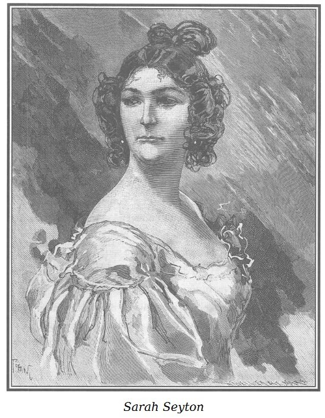

Sarah Seyton lúc này là quả phụ của Bá tước Mac-Gregor, tuổi trạc ba mươi bảy, ba mươi tám; xuất thân từ một gia đình vọng tộc xứ Écosse, là con gái của một tiểu Huân tước nông thôn.
Mồ côi, với sắc đẹp hoàn mỹ, mới mười bảy tuổi, Sarah đã rời xứ sở cùng với người anh là Tom Seyton de Halsbury.

.Những lời tiên đoán phi lý của một bà già vùng Thượng xứ này nguyên là vú nuôi của nàng đã kích động cao độ hai tật xấu căn bản của cô chủ, lòng kiêu hãnh và tham lam, khiến nàng khăng khăng một niềm tin sắt đá khó tưởng tượng nổi vào một số phận cao quý nhất dành cho nàng sau này… Việc gì mà không nói ra nhỉ: Số phận vương giả nữa kia!
Cô tiểu thư Écosse tin những lời tiên tri của bà vú nuôi và luôn luôn tự nhủ để xác minh cho niềm tham vọng của mình rằng trước đây cũng có một bà thầy bói thường hứa mũ miện hoàng hậu cho một cô gái được sinh ra ở thuộc địa, xinh đẹp và tốt bụng, một ngày nào đó sẽ ngồi trên ngai vàng nước Pháp; quả thế và cô gái này đã trở thành hoàng hậu bằng sự duyên dáng và lòng hảo tâm không kém gì những bà hoàng hậu khác bằng sự cao cả và uy nghi.
Kỳ lạ thay! Tom Seyton cũng mê tín như cô em, khuyến khích những hy vọng điên rồ của nàng và đã quyết tâm dành cả cuộc đời của mình cho việc thực hiện giấc mộng của Sarah, vừa chói lọi, vừa rồ dại.
Tuy nhiên, cả anh lẫn em, cũng chẳng đến nỗi u mê để quá tin vào lời tiên đoán của bà già vùng Thượng, để chỉ nhăm nhe vào những ngai vàng hạng nhất mà coi nhẹ những ngôi hạng thứ hay là các công quốc đương triều, không đâu! Miễn nàng thiếu nữ Écosse đội được trên vầng trán uy nghi một mũ miện hoàng phi là được! Bộ đôi kiêu kỳ ấy sẽ nề hà vương địa lớn nhỏ hay sao?
Nhờ sách lịch sử thông thư Gotha in năm 1819 tốt lành, trước lúc rời xứ sở Écosse, Tom Seyton đã dự thảo một bản khái quát* theo lứa tuổi tất cả những vua chúa đang trị vì ở châu Âu đến tuổi thành hôn.
Một loại bảng thống kê, dùng cho nghiên cứu khoa học.
Tuy quá phi lý, tham vọng của ông anh và cô em không hề vẩn qua một thủ đoạn nào xấu xa nhục nhã. Tom có nhiệm vụ phải giúp đỡ cô em giăng một cái lưới hôn nhân để quàng cho được một cái mũ miện nào đó. Tom sẽ cùng cô em sắp đặt mưu ma chước quỷ để đạt kết quả, tuy nhiên gã sẽ giết chết cô em còn hơn thấy nàng trở thành tình nhân của một vương công, ngay cả khi chắc chắn là sẽ có lễ cưới rửa thẹn về sau.
Việc kiểm kê hôn thú do tra cứu quyển lịch thông thư Gotha đem lại kết quả mong muốn.
Liên bang Đức là nơi có một đội ngũ đông đảo những thế tử sắp nối ngôi. Sarah vốn theo đạo Tin Lành, Tom thừa biết những thuận lợi hôn nhân ở Đức, lấy nhau không cần cưới xin, hôn nhân vẫn cứ hợp pháp, cùng quá thì như vậy gã cũng ưng. Vậy là đã có sự nhất trí giữa gã và cô em, cả hai đều sang Đức để “bắt đầu sự nghiệp nhử chim bằng giả tiếng chim hót để bẫy bằng nhựa dính”.
Nếu dự kiến ấy tỏ ra khó thực hiện, niềm mơ ước ấy điên rồ, thì chúng tôi xin thưa ngay rằng, phàm đã ôm ấp một tham vọng vô độ, lại còn bị quáng mắt vì mê tín dị đoan, thì họ khó mà biết điều trong các mưu đồ, hầu như họ chỉ chịu bó tay trước sự “bất khả” mà thôi! Tuy nhiên, nhớ lại một số sự việc đương thời, từ những cuộc hôn nhân tôn nghiêm và trang trọng giữa vua chúa với thường dân, giữa vương công và hạ thần, kể cả những cuộc phiêu lưu thơ mộng của tiểu thư Penelope và ông hoàng xứ Capoue* thì người ta không thể không chấp nhận một vài khả năng thành công cho những ảo tưởng của Tom và Sarah.
Tức Carlo Ferdinando, con trai thứ hai của Vua Francis I xứ Hai Sicilia. Năm 1836, Hoàng tử chạy trốn khỏi vương quốc với người tình của mình, một phụ nữ Ireland thuộc tầng lớp bình dân tên là Penelope Smyth. Cuộc hôn nhân này không được giới quý tộc chấp nhận và Hoàng tử cũng không được kế vị ngai vàng. Nhưng chuyện tình này khiến những thiếu nữ đương thời mơ mộng về một cuộc hôn nhân giữa quý tộc và thường dân như thế.
Xin nói thêm là Sarah, ngoài sắc đẹp tuyệt vời lại còn được thiên phú cho nhiều tài năng đa dạng, với một sức quyến rũ mạnh mẽ, thậm chí còn ghê gớm hơn nữa, vì gắn với một tâm hồn sắt đá, nghiệt ngã, một đầu óc khôn khéo và độc ác, một tài che đậy giỏi giang, một tính cách kiên trì, bền bỉ, độc đoán; ở nàng tập trung mọi vẻ bề ngoài của một bản tính cao thượng, nồng nhiệt và si mê.
Trong con người nàng, thể chất cũng dối trá và thâm độc chẳng kém gì tinh thần.
Mắt to và đen láy, lúc thì long lanh, lúc thì ưu tư thơ mộng dưới cặp lông mày đen như mun; có thể ví như sáng rực vì khoái lạc đấy nhưng chẳng có khát vọng nóng bỏng nào của yêu đương có thể làm rung động nổi trái tim băng giá, không một sự ngộ nhận nào của tâm tình hoặc xác thịt có thể xáo trộn những tính toán tàn nhẫn của người phụ nữ quỷ quyệt, ích kỷ và nhiều tham vọng này. Vào đến châu lục, theo lời khuyên của ông anh, Sarah không muốn bắt đầu ngay sự nghiệp trước khi lưu trú một thời gian ở Paris, nơi nàng muốn trau dồi thêm nền học vấn của mình, làm cho nhuần nhã hơn tính cứng nhắc Ăng-lê trong giao thiệp với giới thanh lịch, phong nhã, hào hoa, tự do, nhiều thị hiếu ở đây.
Sarah được thâm nhập vào giới thượng lưu nhờ một vài lá thư tiến cử và sự bảo trợ khoan dung của Đại sứ phu nhân Anh quốc và của ông Hầu tước già d’Harville, vốn có đi lại với cha của Tom và Sarah lúc còn ở bên Anh quốc.
Những con người lãnh đạm giả dối, tính toán so đo tiếp thu nhanh chóng một cách lạ thường ngôn ngữ và cốt cách trái ngược nhất với tính cách của họ. Ở họ, tất cả chỉ là bề mặt, bên ngoài, lớp phủ, vỏ bọc; đến lúc mà thiên hạ hiểu thấu, ước đoán, phát hiện được thì họ thất bại ngay, vì thế bản năng tự vệ trời phú cho họ, làm cho họ hết sức thiện nghệ về ngụy trang đạo đức, tinh thần. Họ tô điểm, hóa trang nhanh chóng, thành thạo chẳng kém bọn đào kép lành nghề.
Chỉ sau sáu tháng ở Paris, Sarah đã có thể thi tài với những cô gái Paris chính hiệu nhất về sự duyên dáng yêu kiều sắc sảo, về tài trí, về vui tươi, đỏm dáng mà vẫn chất phác, ngây thơ, diễm tình, khêu gợi, mà hồn nhiên trong trắng.
Thấy cô em đã “thành tài”, Tom và nàng sang Đức cùng với những thư giới thiệu tuyệt hảo.
Nước đầu tiên trên hành trình đến Liên bang Đức là Đại công quốc Gerolstein, đã được thuyết minh đầy đủ trong niên lịch phổ thông ngoại giao không-thể-có-lầm-lẫn Gotha in năm 1819:
PHẢ HỆ CÁC QUỐC GIA CHÂU ÂU VÀ HOÀNG TỘC GEROLSTEIN
“Đại công tước đương triều, MAXIMILIEN RODOLPHE sinh ngày 10 tháng 12 năm 1764. Nối ngôi cha là CHARLES FREDERIK RODOLPHE ngày 21 tháng 4 năm 1785. Thất ngẫu tháng Giêng 1808, phu nhân húy là LOUISE, ái nữ của thân vương JEAN AUGUSTE DE BURGLEN. Thế tử GUSTAVE RODOLPHE sinh ngày 17 tháng 4 năm 1803. Đại thái phi JUDITH, có thái địa, quả phụ của Đại công tước CHARLES FRÉDÉRIK RODOLPHE, thăng hà ngày 21 tháng 4 năm 1785.”
Tom vốn khá thức thời, đã ghi hết trong danh sách của gã những người trẻ nhất trong các vương tôn, thế tử mà gã lăm le kết thông gia, nghĩ rằng càng ít tuổi thì càng dễ quyến rũ hơn là đứng tuổi. Vả lại, Tom và Sarah đã được đặc biệt tiến cử với Đại công tước đương triều Gerolstein nhờ lão Hầu tước d’Harville vốn hâm mộ Sarah như tất cả mọi người, vì sắc đẹp duyên dáng của nàng. Tưởng chẳng cần nói rõ hơn, người thừa kế ngôi báu Gerolstein, thế tử Gustave Rodolphe mới chưa đầy mười tám tuổi khi Tom và Sarah đến trình diện Đại công tước.
Việc cô tiểu thư xứ Écosse đến Đại công quốc là một tin thời sự đáng chú ý ở triều đình yên ổn, giản dị, nghiêm túc và có thể nói là mang tính gia trưởng này. Đại công tước, vốn là con người tốt nhất trần gian cai trị các tiểu quốc của ông kiên quyết mà khôn khéo, ân cần với dân như cha với con, không nơi nào dân chúng sung sướng hơn về vật chất và tinh thần như ở đây, dân chúng thì cần cù nghiêm trang, đúng là mẫu hình lý tưởng cho tính cách Đức. Người dân ở đây trung hậu; họ sống đầy đủ, sung sướng, hoàn toàn hài lòng với số phận hiện tại, khiến cho sự chăm sóc sáng suốt của Đại công tước tránh cho họ thói tật sính canh tân hiến pháp.
Còn đối với những tân phát minh, những tư tưởng thực dụng có thể bổ ích cho sự sung túc về nhiệm vụ đạo đức hóa xã hội, thì Đại công tước luôn tìm hiểu, học hỏi và ứng dụng không ngừng; các ông công sứ bên các cường quốc châu Âu khác, chỉ có việc làm cho chúa công của họ được thông tin về tất cả những tiến bộ khoa học cho ích lợi chung và thiết thực.
Như chúng tôi đã từng nói: Đại công tước thấy mình càng được yêu mến bao nhiêu lại càng biết ơn bấy nhiêu lão Hầu tước d’Harville, người đã có ơn lớn với ông năm 1815. Vì thế, nhờ có sự tiến cử của lão Hầu tước, Tom và Sarah được tiếp đón ở triều đình Gerolstein trọng vọng và thân thiện khác thường.
Mười lăm ngày sau khi đến Gerolstein, vốn có khiếu quan sát, Sarah đã dễ dàng dò biết được tính cương nghị, thẳng thắn và cởi mở của Đại công tước, trước khi mê hoặc được con ngài; điều không thể trật được, là cô gái khôn ngoan này còn phải lấy được lòng ông bố đã, để mà yên trí về cách thu xếp của ông cho cuộc hôn nhân về sau. Đại công tước yêu con trai ra mặt, khiến Sarah có lúc tưởng rằng ông sẽ có thể hứng chịu một cuộc hôn nhân không môn đăng hộ đối còn hơn là để cậu con trai yêu quý đau khổ suốt đời. Nhưng chẳng bao lâu cô gái xứ Écosse đã thấy rõ là ông bố nhân từ ấy sẽ không vượt qua một số nguyên tắc, một số ý niệm nhất định về nghĩa vụ của các ông hoàng.
Đấy chẳng phải là kiêu hãnh, mà là ý thức, là lẽ phải, là phẩm cách.
Như thế thì một người có nghị lực tinh thần mạnh mẽ, càng nhân hậu và càng tốt bao nhiêu thì sẽ không bao giờ chịu nhượng bộ tất cả những gì vi phạm đến ý thức, lẽ phải và phẩm cách.
Sarah cũng đã bắt đầu từ bỏ mưu toan của mình trước những trở ngại tưởng chừng không tài nào vượt nổi ấy; nhưng nghĩ rằng, may sao Rodolphe lại rất trẻ, được mọi người ca ngợi là dịu dàng, tốt bụng, đồng thời lại vừa bẽn lẽn, vừa thơ mộng. Do bởi tính ông hoàng yếu đuối, nhu nhược và thiếu quyết đoán; nên nàng lấy lại được lòng kiên trì trong dự định và kỳ vọng của mình.
Vào thời điểm ấy, cả hai anh em cư xử cực kỳ khôn ngoan và khéo léo.
Cô gái thì khéo lấy lòng tất cả mọi người, nhất là những ai có thể ghen ghét hoặc đố kỵ vì những lợi thế của nàng, khiến họ quên đi vẻ kiều diễm duyên dáng mà chỉ thấy ở nàng nết khiêm nhường giản dị; chẳng bao lâu nàng đã được Đại công tước cưng chiều cũng như bà Quốc thái yêu mến, bà cố đã ngoài chín mươi, hoặc là do lẫn cẫn tuổi tác, hoặc vẫn còn ưa chuộng tất cả những gì trẻ và đẹp.
Nhiều lần Tom và Sarah ngỏ ý muốn xin đi. Thế nào mà Đại công tước đồng ý cho được! Và để giữ cả hai anh em ở lại, người yêu cầu tiểu Huân tước Tom Seyton de Halsbury hãy nhận chức đệ nhất giám mã quan đang khuyết và nài nỉ Sarah đừng rời bỏ bà Quốc thái Judith, bà cố không thể vắng nàng.
Sau nhiều lần làm ra vẻ đắn đo và nể vì những lời khuyên nhủ ân cần, Tom và Sarah mới chấp nhận những lời mời mọc danh giá ấy và ở lại triều đình Gerolstein sau khi họ đến đây hai tháng.
Sarah vốn giỏi nhạc, lại biết bà Quốc thái xưa nay vẫn chuộng các lão nhạc sư bậc thầy, trong đó có Gluck, đã sưu tầm những tác phẩm của đại nghệ sĩ nổi tiếng ấy và bằng tài đón ý chiều chuộng vô cùng khéo léo, cùng tài biểu diễn những ca khúc cổ xưa với một phong cách vừa giản dị vừa ý nhị tuyệt vời.
Về phía Tom thì gã biết tỏ ra giỏi giang trong công việc mà Đại công tước giao phó. Gã trai xứ Écosse này có nhiều hiểu biết về các chiến mã, làm việc rất có kỷ cương và quyết đoán; nên chẳng bao lâu đã thay đổi hẳn vụ ngự mã của Đại công tước, nơi này trước kia đã bị thói làm ăn cẩu thả, tắc trách và hủ lậu làm cho bê bối, rối loạn hết cả.
Cả anh lẫn em đều mau chóng được mọi người trong triều yêu mến, chèo kéo và chiều chuộng. Ông chúa mà đã quý thì người dưới ai mà chẳng phải ưa! Kể ra thì Sarah đã biết là cần đến những ai cho các mưu toan sau này, nên nàng hết sức khéo léo mua chuộc mọi người để lôi kéo thêm nhiều vây cánh. Đạo đức bề ngoài với đủ dạng lôi cuốn nhất, đánh lừa các bà phu nhân người Đức vốn trung thực, thật thà một cách dễ dàng và lòng ái mộ chung của mọi người chẳng mấy chốc đã thừa nhận sự khoan dung hết mực của Đại công tước đối với Sarah.
Và thế là bộ đôi ấy đã dành được chỗ đứng vững chắc và danh giá trong triều đình Gerolstein mà chưa cần phải nghĩ đến lợi dụng Rodolphe. May mắn làm sao, vài ngày sau khi Sarah đến đây, Rodolphe lại có việc phải đi thanh tra quân đội với một sĩ quan tùy tùng là ngài Murph trung thành.
Sự vắng mặt ấy lại càng tiện hơn cho mưu đồ của Sarah, nàng tha hồ mà xếp đặt, bài binh bố trận, không sợ bị trở ngại chút nào. Vì nếu ông hoàng trẻ tuổi mà có nhà, thì do quá mộ nàng ra mặt, có thể khiến Đại công tước sinh cảnh giác mất.
Ngược lại, trong khi thế tử vắng mặt, thật chẳng may chút nào, Đại công tước lại không hề nghĩ đến là người đã cho một người con gái đẹp hiếm có, tinh anh sắc sảo lọt vào giới thân cận của cung đình để hàng ngày, không lúc nào là không chạm trán Rodolphe!
Trong thâm tâm, Sarah không mảy may xúc động trước sự đón tiếp ân cần, nồng hậu, trước sự tin cẩn cao quý đã cho phép nàng đi lại chốn hoàng cung.
Cả cô gái và người anh trai đều không hề lùi bước trước những ý đồ xấu xa của họ; họ đã cố tình phá rối và đem lại sự phiền muộn cho triều đình thanh bình, hạnh phúc ấy. Họ đã lạnh lùng dự kiến mọi hậu quả có thể xảy ra, những mối bất bình chia rẽ độc địa mà họ gieo rắc giữa hai cha con Đại công tước xưa nay vốn hòa hợp, gắn bó yêu thương thắm thiết.